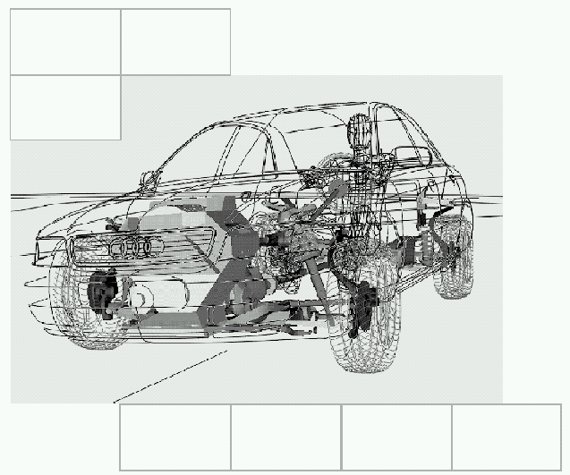

Development
First issue Date of revision |
|
|---|
[redacted]
[redacted-addr]
Phone: [redacted-phone]

E6 Derivative [redacted-prj]/4_Cx_BL (Sedan) Development[redacted-person] System (In-Position) LAH.85K.880.K
RFQ [redacted-person] for [redacted-person]
Distribution list:
|
|
|
|---|---|---|
|
|
[redacted-person] |
|
|
[redacted-person] |
|
|
[redacted-person] |
Contents
|
||
|---|---|---|
|
|
|
| [redacted-person] |
|
[redacted-person] |
| [redacted-person] |
|
[redacted-person] |
| [redacted-person] |
|
[redacted-person] |
[redacted-person] Specification describes the commercial and technical specifications under which the bidder receiving the request for quotation (RFQ) (hereinafter referred to as the "contractor") may submit a quotation for the pertinent requested scope of work.
This document describes the relevant interfaces, processes, rights, and services requested as the basis for the award.
The contractor shall take this [redacted-person] into consideration to the fullest extent in preparing its quotation. In its quotation, the contractor shall consider all services required for complying with the [redacted-person]. It is imperative that the quotation exclusively refer to the [redacted-person] and comprehensively present the manner of rendering the services required therein. Deviations from the [redacted-person] shall be expressly identified as such in the quotation or in the ordering systems of [redacted]with reference to the respective section.
If the contract is awarded to the contractor, the latter shall ensure that the performance described in the [redacted-person] be rendered towards [redacted-co] as specified.
[redacted-co] reserves the right to conduct cost plausibility checks prior to ordering the work and to conduct subsequent negotiations accordingly. The prices and scheduled dates quoted may not be exceeded. All modifications necessary for achieving the objectives and functional compliance with the [redacted-person] are contained in the quotation.
The content of the [redacted-person] and likewise, the documents additionally provided, are subject to confidentiality and may only be made accessible to third parties with the express consent of the responsible [redacted-co] department. Insofar as a transmission to third parties, in particular, to third parties affiliated with the contractor, is required for preparing a quotation and this was approved, the contractor shall make certain that confidentiality is ensured.
The contractor shall fill out the structured RFQ of [redacted]that is to say, provide the required information for itemization and plausibility analysis.
Based on the structured RFQ, the contractor shall prepare a correspondingly structured quotation free of charge. All details for deriving the value of the quotation and the plausibility analysis shall be contained in this quotation. This includes, in particular, the forecast expenditure of working hours
for the contractor. If additional details with regard to the quotation are requested by [redacted]the contractor shall promptly provide these free of charge.
The present [redacted-person] exclusively refers to services within the scope of project schedules. These can be, among other things, development, design engineering, numerical simulation, test bed, testing, workshop, and project management services.
The nature and scope of the services shall be in conformity with the [redacted-person] unless circumstances are individually negotiated and explicitly regulated differently in writing.
For the [redacted-prj]/4Cx_BL (E6 sedan), functions and properties for vehicle safety must be developed to production readiness.
The concept topics that are still pending at the start of the project must be taken into account in the quotation.
The contract award comprises the development of the front restraint systems for the 1st and 2nd seat rows (in-position) as described in the [redacted-person] and applicable documents listed below.
The work model corresponds to a general developer contract award. The general developer is responsible for the project coordination.
The project objective is to robustly meet the development objectives of the front occupant protection (in-position) while also maintaining and meeting weight and cost targets.
The main task is to develop robust systems suitable for release and the associated release recommendations.
The vehicle objectives must be taken from the LAH.85K.880.B (E6 Sedan [redacted-prj] flat-floor) [redacted-person] Specification for [redacted-person] and appendix 5 LAH.85K.880.C of the vehicle project.
If requirements (legal regulations, consumer protection, internal requirements) change during the course of the project, they must be incorporated. If this results in additional expenses, this must be reported immediately to the purchaser and indicated accordingly. If no additional expenses are reported, the new objectives will be considered to have been accepted (at no extra cost to the purchaser).
Decisions that have an influence on the budget, project objectives, concepts, design of requirements, etc. must be agreed upon with the purchaser, and the decisions made together must be documented.
[redacted-person] Specifications associated with the contract award scope are described briefly below. The services to be provided and requirements to be met must be taken from these [redacted-person].
Front protection restraint system development
[redacted-person] LAH.DUM.880.KH defines the front protection restraint system development services to be provided.
Requirements for front protection restraint system development
[redacted-person] LAH.DUM.880.KJ defines requirements for the front protection restraint system.
Front protection simulation process and method
[redacted-person] LAH.DUM.880.EC defines the processes and methods for front protection simulation. Among other things, the [redacted-person] describes the state of the art and the minimum quality required for the simulation.
Scopes for rear occupant protection and child safety
The scopes for rear occupant protection and child safety must be designed and developed as per the legal and consumer protection requirements that apply at the Start of Production (SOP).
Analogously to the above sections regarding the occupant protection for the first seat row, the conditions for the Chinese market must be considered.
The vehicle safety objectives must be taken from [redacted-person] LAH.85K.880.B and
LAH.85K.880.C.
Details regarding the development of rear occupant protection/child safety for the Chinese market must be taken from [redacted-person] LAH.DUM.857.DG.
The restraint system must be developed for the Chinese market as required in [redacted-person] LAH.85K.880.B and LAH.85K.880.C.
The restraint systems must be developed and adjusted for the ordered vehicles with all corresponding drive and equipment variants.
The contractor must prepare a drive and equipment matrix independently and under its own responsibility.
The legal regulations and consumer protection objectives to be fulfilled must be taken from the LAH.85K.880.B (E6 sedan [redacted-prj] flat-floor) [redacted-person] Specification for [redacted-person] and appendix 5 of LAH.85K.880.C.
All load cases that are not internal [redacted-co] load cases must be handled as per the protocols currently in effect for the consumer protection tests and legal regulations.
Internal [redacted-co] load cases must be carried out as per the stipulated conditions. [redacted-co] will provide the necessary documents ([redacted-person], reports, etc.) at the start of the project.
Within the context of the non-disclosure agreement, the contractor must ensure that only secure data transfers are used.
Forwarding data to third parties is permissible only following consultation with [redacted]
The following applicable documents must be observed:
LAH.85D.800 A EK Body & [redacted]
LAH.85K.880.B [redacted-person] Specification for [redacted-person] for E6 Sedan
LAH.85K.880.C appendix 5 for [redacted-person] Specification for [redacted-person] for 5 E6 Sedan
LAH.85K.880.D [redacted-person] RFQ [redacted-person] for E6 Sedan
LAH.DUM.880.KH [redacted]Development
LAH.DUM.880.KJ [redacted]
LAH.DUM.880.EC [redacted]and Method
Reporting as per [redacted-person] maturity requirement
LAH.DUM.857.DG Requirements for [redacted-person] Protection/[redacted-person], China
All work packages must be handled using a project branch of the AEN Jira [redacted-co] tool in the OSFRONT project during the course of the project.
Specifically, this means the following for the contractor:
Task formulation by all project employees
Tracking the work progress
Complete and comprehensive documentation of the work results
Deriving subsequent tasks
In addition to the above requirements, it is mandatory to archive work results (if not reproducible in Jira) in conformity with the [redacted-person] for Documents (CSD) as per Guideline 0.2 or 5.2 in the location specified by the purchaser. The archived results must be documented in a suitable manner in the Jira workflow (e.g., with links).
Access to work results must never be granted to only one person. The principle of multiple-party verification always applies. One of the consequences of this is that it is not permissible to exchange work packages and work results via conventional means of communication (e.g., e-mail). In general, pure e-mail correspondence is reserved exclusively for communication. If interface partners are still working with conventional means of communication, it is permissible to exchange work results with interface partners through these means. In this case, the exchange must be documented in Jira.
The contractor guarantees that it has the necessary expertise to process the scope of the project. From the perspective of [redacted]this includes, in particular:
Advanced skills in the common Office applications (Word, Excel, PowerPoint)
Advanced skills in the following software environments:
CATIA
Animator
Generator
Pam-Crash
ESI Sim-Folder
cplace
Advanced skills in the following internal [redacted-co] software environments:
CAE-Bench
LoCo
CAViT
KVS
CONNECT
[redacted-co] DOX
[redacted-co] Jira
Advanced knowledge in the area of vehicle safety development and the necessary expertise in body-in-white and interior development in automotive manufacture – especially:
Front restraint system development (in-position) for 1st and 2nd seat rows
Development of ECE R21 (dynamic area determination)
The project start and the SOPs for the derivatives are specified in EK [redacted-person] Specification LAH.85K.800.A.
Start of project: [redacted-person] (KF) milestone, but not before the contract is awarded. The concept topics that are still pending at the start of the project must be taken into account in the quotation.
Project end: Last ramp-up +3 months (currently ramp-up 5; see EK [redacted-person] Specification LAH.85K.800.A)
SOP postponement by 6 months must be taken into account in the quotation.
Listed in the current master project schedules for the product line (control schedule, SOP cascade, etc.); see LAH.85K.800.A appendix 2 (Schedule).
The contractor must prepare and maintain part schedules and specific development schedules for vehicle safety (e.g., test plan) and communicate them via the [redacted-co] project committees (e.g., simultaneous engineering team).
[redacted-co] will cover the costs for performing tests, including part costs (workshop, test facility), method for effective restraint-system development (MeRKE) tests, sled tests, and crash tests.
The contractor must work with the computer-aided engineering (CAE) programs and CAE models of the purchaser's process chain. The contractor must obtain information regarding the licenses required for this purpose from the software and model producers/distributors and purchase these licenses at its own expense. [redacted-co] will only provide the numerical simulation clusters for the numerical simulations.
[redacted-co] provides the contractor with the CAD data required for performing the work. Data is exchanged exclusively via the systems intended for this purpose by the purchaser. Finite element method (FEM) models are provided to the contractor if they are created in the project by other [redacted-co] divisions as per the model setup matrix. Accompanying data (e.g., material cards) can be taken from the relevant systems (e.g., crashdb). If data is not entirely available for a complete model, then the contractor must create the missing content in a suitable manner. If applicable, a verification ("validation") of the input data must be prepared in consultation with [redacted]
The remuneration is based on the project phases and milestones and depend on their successful completion. It will be paid in accordance with an agreed payment plan, normally at the end of the project phases, with corresponding documentation and verification. Table 1 below provides an overview of the main objectives used to measure the project's success.
If a milestone objective is not met, the payment will be reduced and will only be settled with the next milestone after the objective is met. The amount of the reduction must be negotiated with the purchaser.
A separate payment plan (engineering project) is prepared for each vehicle project. Every vehicle project and derivative must be indicated separately.
|
|
|
|---|---|---|
|
|
|
|
|
|
|
|
|
|
|
|
|
|
|
Table 1: Measurement of project success
As per section 3.6. A separate reimbursement of travel expenses as per section 3.6.3 is hereby not agreed upon. Travel expenses must be included in the contract value. Likewise, all expenses and costs not expressly to be borne by [redacted-co] must be borne by the contractor and covered by the agreed price.
Contacts for front/restraint system (E6 derivatives):
[redacted-person] ([redacted-id]) Phone: [redacted-phone]3
E-mail: [redacted-email]
Stand-in:
[redacted-person] ([redacted-id])
Phone: [redacted-phone]2
E-mail: [redacted-email]
Contractor subcontracting
The contractor can subcontract out sub-packages of the required performance. However, this must be disclosed to the purchaser while the quotation is being prepared. In addition, this disclosure must include the specific partners with which the contractor wants to work.
Irrespective of this, the contractor remains fully responsible. If sub-packages are subcontracted out, the third parties must be coordinated and managed exclusively by the contractor. The contractor remains the only interface to the purchaser.
Rules regarding the simulation software and process
The version of the Pam-Crash solver to be used is specified by the appropriate [redacted-co] department. The internal [redacted-co] workflows require regular updates of the includes to the latest solver version. A version change will be disclosed to the contractor by the appropriate [redacted-co] department along with the new Pam-Crash version to be used and a binding deadline for the change far enough in advance.
The contractor must submit the following to the appropriate [redacted-co] department by this deadline:
All includes created and maintained by the contractor under its primary responsibility, in the new Pam-Crash version.
Documentation of one or more representative, comparative numerical simulations demonstrating that none of the relevant result variables is significantly changed as a result of the version change.
Comparative numerical simulations are mandatory in any case. A comparison of the syntax between the new version and the old version is not sufficient.
If the comparative numerical simulations demonstrate that the results of the adapted includes deviate from the reference numerical simulation, the causes of this deviation must be examined and remedied. Validations against existing component tests or the like must be carried out again as needed.
In order to estimate the associated costs when preparing its quotation, the contractor can assume a maximum of one change per calendar year.
Analogously to the Pam-Crash version, the [redacted-co] simulation process for the "ESI check" is integrated. The same requirements as those listed above for the Pam-Crash version apply. Tool updating max. once per calendar year must be assumed here as well.
The contractor shall render its services independently and under its sole responsibility, and exclusively with qualified personnel. The contractor shall render services according to the latest state of the art and science and technology, and according to the accepted standards of professional practice, including the documentation. Any technical, expert, or other requirements of [redacted-co] do not release the contractor from its obligation and responsibility for rendering the services free of faults.
The contractor shall evaluate the content of the information, documents, project-related instructions, requirements, and similar specifications of [redacted-co] for completeness, accuracy, consistency, and feasibility. The contractor shall promptly notify [redacted-co] in writing, with regard to any inadequacies stating the reasons.
Upon [redacted-co]'s request, the contractor shall draw up meaningful status reports in writing.
[redacted-co] will make available to the contractor the necessary information and documents upon request. Beyond this, any participation requires a separate, written agreement.
If working equipment is made available by [redacted]in particular, for security reasons (hardware, software, etc.), this is done on a loan basis. All working equipment, and all data, software, etc. stored thereon, are the sole property of [redacted]The working equipment shall be used exclusively for the purposes and for the duration of the assigned scope of the work. It shall be returned to [redacted-co] after concluding the order, or, in the case of software handed over without hardware, deleted. For the IT sector (hardware/software), reference is made in particular to the applicability of the IT [redacted-person].
The contractor is responsible for planning the project and performing the services. If there are hourly allocations stated by [redacted-co] for the scope of the performance, these are merely estimates based on experiential values.
The contractor shall render its services with regular professional consultation with [redacted]and shall designate a project manager who plans and monitors the deployment of personnel and development of the unit. This project manager is the responsible contact for [redacted-co] with regard to all concerns pertaining to the project. [redacted-co] can make statements effective for the contractor vis-à-vis this contact.
The employees employed by the contractor are solely subject to the contractor's right to issue instructions. The contractor shall ensure that the right to issue instructions is exclusively exercised by the contractor. The persons employed by the contractor may not enter into any employment relationship for [redacted]also insofar as they render services in the latter's premises.
If a person employed by the contractor for fulfilling the contract is replaced by another, or if familiarization with the order is generally required (e.g., training for processing the order mandatorily required for [redacted-co] IT systems), the expenses for such familiarization shall be borne by the contractor. The contractor shall reasonably take into consideration the interests of [redacted-co] in the course of its selection. [redacted-co] can, while providing the rationale, request the replacement of persons employed by the contractor for fulfilling the contract if these persons repeatedly violate contractual obligations. The costs arising due to this replacement shall be borne by the contractor.
The contractor commits to – with respect to the employees employed for fulfilling the contractor's services – making visually recognizable by suitable measures the fact that these are contractor employees, and non-involved third parties are able to unambiguously recognize this at any time. In particular, identification must be visibly worn.
If the contractor, within the framework of rendering the services, uses premises that have been specially rented by [redacted]or made available, the contractor shall take this into account as a reduction in the calculation of its quotation prices. [redacted-co] is authorized to lease to the contractor specially rented spaces and to invoice for the rent. It must be made visually recognizable in these premises (by suitable measures) as to which contractor has the premises at its disposal. Whether the premises are provided or leased requires a decision in each individual case. The same shall apply for production equipment of [redacted]The contractor shall take into account in the quotation expenditures saved for not having to provide its own premises and production equipment.
Transferring to, or sharing the order with third parties on the part of the contractor requires the prior written consent of [redacted]If a delivery and service are made by third parties, invoicing may only be carried out by the contractor.
The agreed performance periods and schedules are binding and conclusive. If necessary, interim dates can be incorporated into these schedules. These are likewise binding. All scheduled dates can only be modified in writing and by mutual agreement.
If the contractor should recognize that it potentially cannot comply with the scheduled date, the contractor shall immediately inform [redacted-co] about this in writing. In so doing, the contractor shall propose measures aimed at guaranteeing the scheduled dates. This notice does not release the contractor from its obligation to comply with scheduled dates. If the notice is not provided, the contractor is responsible for failure to meet the deadline, irrespective of the cause. If [redacted-co] is responsible for not complying with the scheduled date, the scheduled date and any follow-on dates shall be specified for new deadlines reasonable for both parties.
The contractor is prepared to take into consideration requests by [redacted-co] for modifications and supplementation for the purpose of realizing the scope of the work described in this [redacted-person]. The contractor shall refuse requests for modifications made by [redacted-co] for only for good reasons. A good reason for the refusal shall be considered to be, in particular, if according to the contractor's reasoned assessment, the performance is not practicable, or if the resources necessary for undertaking the modification are not available for the contractor and also cannot be made available.
The contractor shall assess the modifications requested by [redacted-co] as they pertain to their impact on costs, investments, and scheduled dates, and – taking into consideration that to the greatest extent possible the scheduled dates should not be changed – quote an implementation proposal. With respect to the costs, this quotation must be just as amenable to verification as the original quotation. The work may only be ordered subsequent to negotiation and a final decision concerning the contract award.
All modifications and supplementations that are required to fulfill the values and functions stated in this [redacted-person] shall be implemented after consultation with the responsible [redacted-co] department (purchaser). Payment for the modifications is satisfied by the quoted and finally agreed remuneration. This shall also apply for modifications within the framework of development progress, including the prototype scopes and additional testing.
Insofar as the contractor determines that the requests for modifications will have effects on the cost structure and/or the milestone schedule, the contractor shall present these in a separate quotation, the acceptance of which lies within [redacted-co]'s sole discretion, and which shall be done in writing or via [redacted-co]'s ordering systems.
For development projects, the determination as to whether the contractor's agreed scope of performance was actually fulfilled as per the agreement cannot be made until after conclusion of the development project and the transfer of the respective development results. This determination takes place exclusively by means of issuing a written declaration of acceptance within the scope of the formal, final inspection of the contractor's scope of performance by [redacted]
The results developed by the contractor shall be delivered in a verifiable form. If this requirement is not fulfilled, the time period for acceptance will not be initiated due to the impossibility of accepting delivery. If the results of the performance are represented as data sets, the contractor shall to this extent grant access for the code of the services rendered so that inspection for performing the services as per the agreement is possible.
The contractor shall provide notice of completing the entirety of the order for the purpose of acceptance of delivery. The acceptance of delivery shall take place as described in the following:
[redacted-co] inspects the services transferred in a form capable of inspection within a time period that is reasonable with respect to the project.
The contractor shall, upon [redacted-co]'s request, and without separate remuneration, provide trained personnel for the testing necessary for acceptance of delivery. Defects occurring in the course of the acceptance inspection will be recorded.
The declaration of acceptance must be signed by the contractor's project manager and the party responsible on behalf of [redacted-co] as per the pertinent signature regulations.
If [redacted-co] rejects acceptance of delivery due to one or more defects, the contractor shall promptly eliminate the defect or defects and shall once again submit the contractor's performance for inspection. The above regulations shall apply accordingly for a renewed inspection.
The contractor has the obligation, and subsequent to agreement with [redacted]the right, to remedy defects twice. This obligation to remedy faults does not modify the agreed completion dates and the legal consequences arising from delay. [redacted-co] may, subsequent to the expiration of a reasonable grace period set by [redacted]itself undertake the contractor's performance, or have the services performed, or withdraw from the contract at the expense of the contractor. In the event of termination, the contractor will only receive remuneration for the services that are independently utilizable and accepted without defects. The right to compensatory damages shall remain unaffected thereby.
A fixed price shall be designated by the contractor/bidder for the task requested for quotation. The calculation of the fixed price shall be disclosed in the quotation. The respective cost elements shall be separately listed based on the scope of performance described in the [redacted-person]. In so doing, third party expenses, among other things, shall be separately listed.
Fixed prices include all ancillary costs. Likewise, all expenditures and costs that are not to be expressly furnished by [redacted-co] shall be borne by the contractor and are satisfied with the agreed price. Deviations from this require an express agreement.
Travel costs only include the cost of a transfer and accommodations (no additional costs for meals and comparable items). Insofar as not otherwise agreed, travel costs are not contained in the order value. These costs may only be remunerated up to a maximum of the agreed rates and within the agreed limits upon providing proof of the expenses. They shall be invoiced on a quarterly basis. The travel cost guidelines for development service providers effective on the respective date of placing the order are applicable; upon request, these are made available by the Procurement department of [redacted]Travel times, additional cost for meals, etc., will not be reimbursed.
The services rendered will be compensated according to the progress achieved. For this purpose, proof of performance shall be provided in advance in each case. Payment plans shall be separately agreed. A claim for remuneration only exists for actual services rendered.
Payments are only made after submitting proof of performance. Proof of performance may only be supplied after completely providing the agreed services or partial services. The proof of performance must have the following content at a minimum:
Status of the work/project status,
Previously achieved milestones/partial results, agreements concerning further actions to be taken,
Signature on the part of the contractor.
For proof of performance, it is preferred that the form obtainable upon request from the [redacted-co] contact is used. Care must be taken that all fields are properly filled out.
Prior to invoicing [redacted]the proof of performance for the services rendered shall be signed by the [redacted-co] department (purchaser) and the contractor. The dually (by contractor and the [redacted-co] contact) signed proof of performance shall be transmitted as an attachment with the invoice to [redacted]Invoices without the appropriate signed proof of performance will be rejected.
The acknowledgment of a proof of performance or initiation of a payment are not to be construed as an acceptance of delivery.
The contractor shall notify [redacted-co] concerning all innovations originating with the contractor in connection with carrying out the work under the contract (included in this are in particular, inventions, technical suggestions for improvement, know-how, but also other individual intellectual efforts), shall submit all documents required for evaluating the innovations, and provide [redacted-co] with all requested information with regard to the innovations.
If the contractor can provide evidence to the extent that inventions and intellectual property rights or copyrights based on them already existed before the start of the work that is the object of the contract ("prior intellectual property rights"), the contractor also retains ownership of said rights. However, the contractor shall state its willingness to grant to [redacted-co] a non-exclusive, sub-licensable right of use, unlimited in terms of duration, geography, and content without paying a fee in excess of the fixed price, if these prior industrial property rights are applied to the development. Insofar as prior intellectual property rights flow into the development result, the contractor shall promptly inform [redacted-co] concerning these prior intellectual property rights. In the event of the development of a production part, the contractor shall disclose the prior intellectual property rights being applied with the presentation of the initial samples.
The contractor shall transfer to [redacted-co] an exclusive, non-remunerated, and transferable right of use that is unlimited in terms of duration, geography, and content to all copyrights (including software and the accompanying source code) to which the contractor is entitled with respect to the services or partial services to be rendered by the contractor. The right of use of [redacted-co] encompasses the authorization to revise, modify, and/or entrust to third parties for their use with or without remuneration the results of the work, the documents, or records.
In justified individual cases, the contractor can agree with [redacted-co] that the complete 2D/3D data delivered by the contractor under the contract may not be transferred to third parties outside of Volkswagen AG and the subsidiary/associate companies of the [redacted-person]. However, in this case, the contractor is obligated to supply neutralized RFQ documents in addition to this contractually owed complete 2D/3D data. Neutralized RFQ documents are packaging space interface presentations (2D/3D data) that present the installation situation, not however, the contractor's prior know-how as represented in the underlying 2D/3D data. The contractor grants [redacted-co] a non-remunerated right of use unlimited in terms of duration, geography, and content
to these neutralized RFQ documents for dissemination, duplication, and processing purposes, as well as for public disclosure within the scope of an RFQ vis-à-vis third parties.
In general, [redacted-co] is solely entitled to all work results, documents prepared and services, etc. arising from this project. To the extent the contractor engages subcontractors, the contractor shall ensure by means of appropriate contractual agreements that the subcontractors also acknowledge this as binding on them. [redacted-co] reserves the right to also transmit all documents to third parties, among other things, for the purpose of selecting suppliers. [redacted-co] is exclusively entitled to a right of exploitation in all work results from the date that they arise, in particular, innovations arising within the framework of the contract.
[redacted-co] is solely entitled to submit applications for intellectual property rights. Upon the contractor's request, [redacted-co] will communicate in writing whether it waives an application in a specific case. The contractor is then authorized to apply for the industrial property right at its own expense. [redacted-co] is entitled to a non-exclusive, non-remunerated, and transferable right of use unlimited in terms of duration, geography, and content in these intellectual property rights.
The contractor shall state towards [redacted-co] whether the work results owed by the contractor contain free software (open source software, freeware and/or public domain, including subcomponents or parts thereof) or not.
If the contractor uses free software in the work results owed, or if this is intended, this use is only then permitted if the contractor informs [redacted-co] about this prior to commencing the development as per the provisions of the "Regulations on the Use of [redacted-person]" (applicable document).
There is no obligation on the part of [redacted-co] to accept the use of free software in the work results owed. The information supplied by the contractor does not effectuate any acceptance on the part of [redacted-co] for the use of free software. In particular, [redacted-co]'s rejection of the use of free software can occur for the purpose of averting security or legal risks.
The following provisions, in particular, the claim for indemnity with regard to third party intellectual property rights, shall apply by way of supplementation.
The contractor shall ensure by means of appropriate searches – in compliance with the diligence customary in the industry – that there is no interference with the rights of third parties owing to the services to be rendered by the contractor, as well as their results. An interference in the rights of third parties also exists then if the use is dependent upon conditions.
If the rights of third parties would be violated due to the intended design of the work results or implementation of the requested feature, the contractor shall immediately inform the [redacted-co] contacts identified in this [redacted-person], and shall jointly find with them a different design for the work results. Insofar as it is not possible to circumvent third party industrial property rights, [redacted-co] will decide whether the affected industrial property right should be utilized by means of a license. [redacted-co] and the contractor shall agree on sharing the expenses accruing thereby in each individual case.
To the extent that the contractor does not inform [redacted-co] concerning conflicting third party rights of which the contractor is aware, or which the contractor should have recognized by observing the diligence customary in the industry, the contractor shall indemnify [redacted-co] for any and all third party claims that are based on conflicting rights in the development subject matter.
[redacted-co] can terminate the contract for convenience at any time entirely or in part. The mutual right of a termination for cause shall remain unaffected thereby. A termination shall be in written form insofar as it does not take place by way of the [redacted-co] ordering system.
Should [redacted-co] terminate for convenience, the contractor is entitled to the agreed remuneration for all services performed according to the contract that the contractor rendered prior to the termination taking effect, insofar as these are independently utilizable, in addition to:
Compensation for the verifiable costs of providing personnel and materials, for a time limit of up to a maximum of one month subsequent to the termination taking effect, if that share of the remuneration allocated to the portion of the services not yet rendered exceeds an amount of € [redacted-phone], or
Compensation in the amount of a maximum of five percent of the agreed remuneration allocated to the portion of the services not yet rendered, if that share of the remuneration allocated to the portion of services not yet rendered is € [redacted-phone] or less than this amount.
Actual evidence to the contrary with respect to an actual higher or lower claim for remuneration is permissible. Lost profits will not be reimbursed.
In the event of termination, placement of the order remains a legal ground for the services rendered up until the termination.
Special reference is made to the [redacted-person] for [redacted-person] with respect to the test and prototype tools and parts.
The transfer of contractual rights or obligations by the contractor requires prior written consent from [redacted-co] to be legally effective.
The legal venue is located in [redacted]AG is also entitled to apply to any other court of competent jurisdiction.
If one or more provisions of this [redacted-person] and any additional agreements should be or become invalid, the applicability of the remaining provisions shall remain unaffected thereby.
If not otherwise regulated in this [redacted-person], the statutory regulations on liability shall apply.
[redacted-person] version of this RFQ [redacted-person] is merely for the purpose of facilitating the work. [redacted-person] version is solely authoritative, and in the case of conflicts or differences, takes precedence over the English version. This applies accordingly for all other documents associated with this, such as, for example, applicable documents.
When an order is placed with the contractor, the following listed regulations and documents of [redacted-co] and/or the contractor will become an integral part of the contract, provided that in the case of conflicts between the contract components, the following stated rank order shall apply:
[redacted-co]'s order
Negotiation records
The technical portion of the [redacted-co] [redacted-person]
Other portions of the [redacted-co] [redacted-person]
Non-disclosure agreement between [redacted-co] and the contractor (insofar as they exist)
Vehicle leasing contracts (insofar as they exist), or [redacted-person] Conditions for [redacted-person]
Volkswagen standard [redacted-co]99000
Additional documents and standards mentioned in this [redacted-person]
[redacted-co] [redacted-person]
The contractor's quotation (without recognizing the general terms and conditions of the contractor)
The applicable documents shall apply in the version valid on the issue date of the [redacted-person], as well as the documents mentioned therein.
The contractor shall ensure that it works with the applicable documents valid for the [redacted-person] in each case.
In particular, the following documents and standards must be taken into consideration:
[redacted-co] [redacted-person]
[redacted-person] Conditions for [redacted-person]
[redacted-person] Specifications and technical and commercial requirements of [redacted-co] relevant for the scope of the order, and relevant standards (e.g. [redacted-co]99000, including parts 1 – 4).
1 Please only refer to standard/document numbers since the document titles may vary.
Regulations on the Use of [redacted-person]
Security rules for third party companies employed at [redacted-co] (if order processing takes place on [redacted-co] premises)
[redacted-person] Policies for [redacted-person] "Formula Q"
To be obtained from:
Documents can be retrieved via the B2B [redacted-person] of the [redacted-person] under the internet address www.vwgroupsupply.com (partly with access authorization, partly publicly available). (Contact is also possible via the [redacted-addr] hotline: [redacted-phone] or international:
[redacted-phone], or e-mail: [redacted-email])